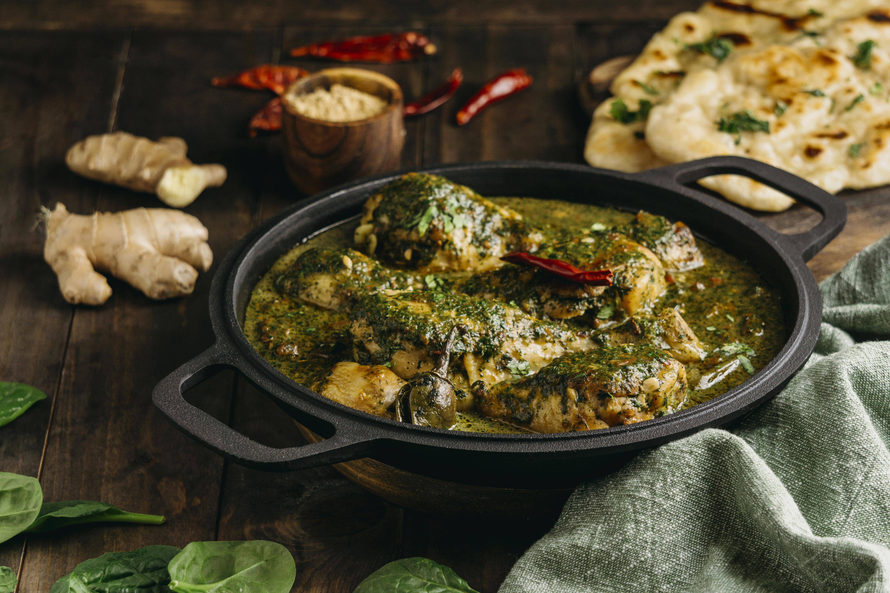

Home
Palak Paneer Recipe

North Indian Style
Palak Paneer is a creamy spinach curry cooked with paneer (Indian cottage cheese), flavored with aromatic spices. Fresh spinach is blanched and blended into a smooth puree, then cooked with onions, tomatoes, garlic, and traditional spices. Cubes of paneer are added to this vibrant green sauce and simmered briefly. It’s a comforting and healthy dish, best served with naan or rice.
Ingredients
- 250g paneer, cubed
- 3 cups fresh spinach leaves
- 1 onion, finely chopped
- 2 tomatoes, chopped
- 1 tablespoon ginger-garlic paste
- 1 green chili (optional)
- 1/2 teaspoon cumin seeds
- 1/2 teaspoon garam masala
- 1/4 teaspoon turmeric powder
- 1/2 teaspoon red chili powder
- 2 tablespoons cream (optional)
- Salt to taste
- 1 tablespoon oil or ghee
- Water as needed
Steps
- Blanch spinach leaves in hot water for 2 minutes, then transfer to cold water and blend into a smooth puree.
- Heat oil or ghee in a pan and add cumin seeds.
- Add chopped onions and sauté until golden brown.
- Stir in ginger-garlic paste and green chili; cook for a minute.
- Add chopped tomatoes, turmeric, red chili powder, and salt. Cook until soft.
- Pour in the spinach puree and mix well. Simmer for 5–7 minutes.
- Add paneer cubes and cook for another 3–4 minutes.
- Sprinkle garam masala and add cream if using. Mix gently.
- Serve hot with roti, naan, or steamed rice.